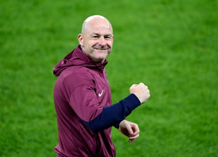

A fter England Under‑21s had retained their European Championship crown , it was left to the match‑winner, Jonathan Rowe, to sum up what made it possible. “Grit, perseverance, determination … you name it,” the Marseille forward said, beaming. “We all dug deep, stuck in and we all achieved what we came here to achieve.
“It’s the start of a new wave. We have so much talent in England so it’s only right that we utilise it to its full potential. With the right head coach, with the right staff, with the right mindset, with the right people, you can accomplish anything.”
It is a message Thomas Tuchel will no doubt have taken note of as he joined the celebrations. With the World Cup less than 12 months away, the example set by Lee Carsley’s side in emulating the back‑to‑back triumphs under Dave Sexton in 1982 and 1984 should give England’s head coach plenty of reasons to feel optimistic about finally ending the wait for a title at senior level.
The player of the tournament, Harvey Elliott , and the no‑nonsense Toulouse defender Charlie Cresswell were also part of the squad in Georgia under Carsley two years ago, while several others have shown they have the capability to make the step up sooner rather than later. They join the former Tottenham winger Danny Thomas, who played in those successful teams more than 40 years ago, as the only Englishmen to win this competition twice.
In particular the outstanding Elliot Anderson – who played for the Wallsend Boys Club that produced Peter Beardsley and Michael Carrick – could provide an immediate answer to Tuchel’s issues at the base of his midfield after excelling in a deeper role than he plays for Nottingham Forest. Tino Livramento, the only squad member in Slovakia to have won a senior cap, looks ready to make one of the full‑back positions his own while the captain, James McAtee, also has the ability to make the step up if he can play more regularly at club level after opting not to join Manchester City for the Club World Cup. The 22-year-old, who is attracting interested from Eintracht Frankfurt, RB Leipzig and Stuttgart in the Bundesliga, placed his trust in Carsley instead.
The softly spoken 51-year-old blooded several members of his last victorious squad at senior level during his six months as England’s interim manager after the departure of Gareth Southgate, including Noni Madueke, Curtis Jones and Morgan Gibbs-White. Add to that Jarrad Branthwaite, Adam Wharton, Liam Delap, Jobe Bellingham and Jamie Gittens, all of whom were unavailable for this tournament because of injury or Club World Cup commitments, and Tuchel could be sitting on a goldmine.
Lee Carsley talked about ‘thinking outside the box’ to lead England to victory.Photograph: Radovan Stoklasa/Reuters
Only a handful of Sexton’s players who defeated a Germany side containing Rudi Völler in 1982 and then Spain two years later went on to make an impact for the seniors , with Mark Hateley – top scorer in 1984 – ending his career with the most senior caps (32). But Carsley stressed before the final the importance of trying to establish “a period of domination” at youth level and said it had taken a completely new approach to mould this group into winners. “The lazy thing as coaches would be to try and just reproduce what we did last time, but we’ve done it differently,” he said.
“We thought outside the box with our training, with our tactics, with the way that we wanted to play with our squad selection.
“We knew we had the Club World Cup in the background as well, so being able to adapt quickly to pivot if we lost players and make sure we picked the right squad that were able to not only play a lot of the minutes with less recovery time but play to a good standard.”
Perhaps the biggest obstacle to many of these players will be establishing themselves at clubs at the higher end of the Premier League. McAtee and Elliott face uncertain futures despite their exploits in Slovakia, while Rowe took a gamble by swapping Norwich for the south of France last year. He will be joined by the former Burnley defender CJ Egan‑Riley, who was brought on in the final for his first appearance of the tournament as a makeshift striker, while Jarell Quansah, called up by Tuchel in his first squad, looks certain to leave Liverpool for Bayer Leverkusen.
“Ultimately I need game time and I believe in myself that I can possibly push for [a recall],” Quansah said. “The standard of England now is unbelievable. You have to be world-class to get in and around it. It will be a huge privilege if I could but it’s going to be hard.
“There’s a lot of experience in the side with the seniors now to hopefully get one over the line. We are always looking to win the next tournament and it will be massive if it’s the World Cup.”